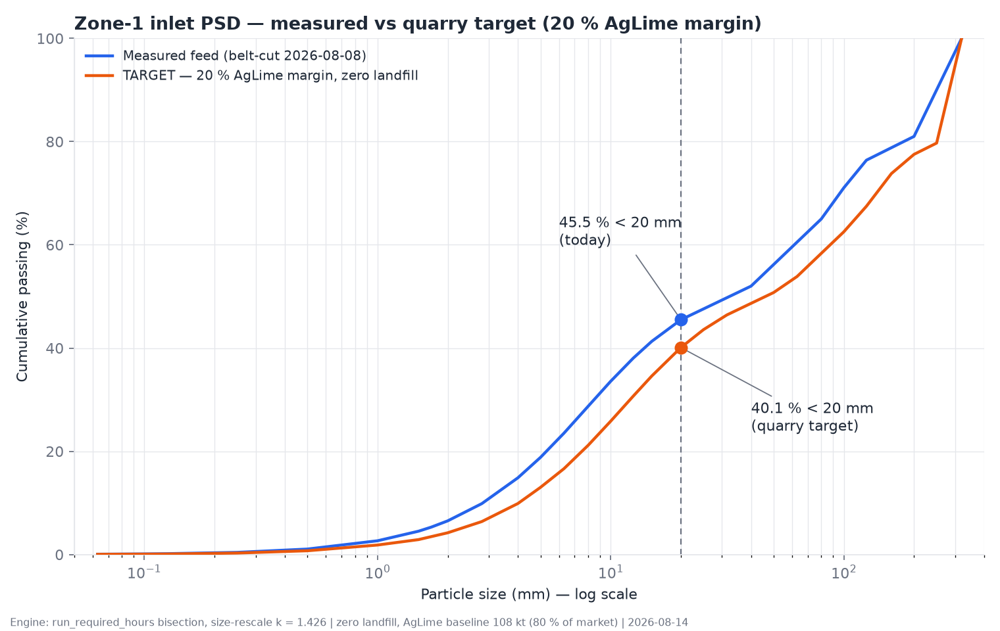

Limestone processing line — complete design, calculation and verification record
The whole line on one page — what is sold, what is proven, what remains open.
The WANKOE line converts a single quarry feed into four sold products. At the configuration adopted on 2026-08-14 — the redesigned zone 1.3 operating in two modes behind a grits diverter, dedicated AgLime campaigns in zone 1.2, and the impactor at its low-speed setting — the annual plan serves every market exactly:
| Product | Sold (t/y) | Status | Zone utilization |
|---|---|---|---|
| KFS 20/35 (kiln, firm) | 85 000 | envelope compliant | zone 1.1 — 71.2 % |
| FeedLime grits 2/4 (firm) | 40 000 | D6 compliant | zone 1.3 — 60.2 % (2 466 h mode G + 1 144 h mode F) |
| FeedLime fines 0/1.5 (objective) | 60 000 | 96.6 % < 1.7 mm | |
| AgLime 0/1.7 | 135 000 | 98.4 % < 1.7 mm | zone 1.2 — 40.5 % |
The single open cost is the disposal of surplus crushed fines: 13 816 t/y of 0/20 still go to landfill at today's measured feed. The governing indicator is the KFS Yield, defined by the client and computed on every engine run:
Today the line realizes $Y_{KFS}=24.88\,\%$ against a zero-landfill requirement of $25.93\,\%$. Closing the 1.05-point gap is the object of the adopted quarry works specification (chapter 8): at the target inlet curve the balance closes exactly — zero landfill with a 20 % AgLime-market buffer held open as the shock absorber.
The as-built zone 1.3 ground 2.83 tonnes of fines for every tonne of grits and failed the adopted grits specification (15.4 % below 2 mm against a 15 % limit). The adopted C1 circuit — two-stage smooth rolls with immediate product relief on a double-deck screen pair — cuts the ratio to 0.84, passes the specification, and, operated in two modes behind the grits diverter DV.GF, decouples the grits and fines order books entirely. Purchase specifications: RC.1 32 t/h; RC.2 two units of 22 t/h each, gap range down to 1.5 mm (mode F), all [H] coefficients pending the vendor gradation test.
The adopted inlet-PSD target: zero landfill with a 20 % AgLime-market margin.
The firm and objective sales (KFS 85 kt, grits 40 kt, fines 60 kt) fix the downstream demand for crushed 0/20; the AgLime market absorbs the remainder through dedicated campaigns. The client's margin rule holds 20 % of the AgLime market open as operational flexibility: the target curve is calibrated so the annual balance lands at
The curve is a shape-preserving size rescale of the measured 2026-08-08 belt-cut, $P_{tgt}(x)=P_{meas}(x/k)$, with $k$ found by bisection on the full two-mode annual plan. The result is $k = 1.426$, i.e. a feed whose every characteristic size is 43 % coarser ($D_{50}$: 32 → 46 mm), delivering

Fig. 8.1 — Zone-1 inlet PSD, semi-log: measured curve vs adopted target. The 20 mm control point carries the whole specification.
| Annual quantity | Today's feed | At target |
|---|---|---|
| Quarry extraction for the same firm sales | 341 650 t | 300 825 t (−40 825) |
| 0/20 to landfill (net loss) | 13 816 t | 0 |
| AgLime baseline / flex reserve | 135 000 / 0 t | 108 000 / 27 000 t |
| KFS Yield realized vs required | 24.88 / 25.93 % | 28.26 / 28.26 % — self-consistent |
| Zone utilizations 1.1 / 1.2 / 1.3 | 71.2 / 40.5 / 60.2 % | 62.7 / 36.0 / 60.2 % |
The explicit cost of the margin: 27 000 t/y of AgLime sales are not planned in the baseline. They are recoverable at will — whenever the quarry runs finer than target, the excess 0/20 is absorbed by pushing the 2C campaigns toward the full 135 kt market instead of being landfilled. The margin is bought with optional sales, not with waste.
| Step | Rule |
|---|---|
| Measurement point | belt-cut PSD at the PIVOT (downstream of the primary crusher), standard project protocol |
| Control point | cumulative passing at 20 mm |
| ≤ 40.1 % | on target or coarser — full flexibility available |
| 40.1 – 45.5 % | workable — AgLime campaigns absorb the excess; the flex reserve shrinks accordingly |
| > 45.5 % | worse than today — landfill exposure returns; escalate to the quarry |
| Live monitor | the engine's KFS Yield alert: each point of gap ≈ 12 kt/y of landfill exposure |